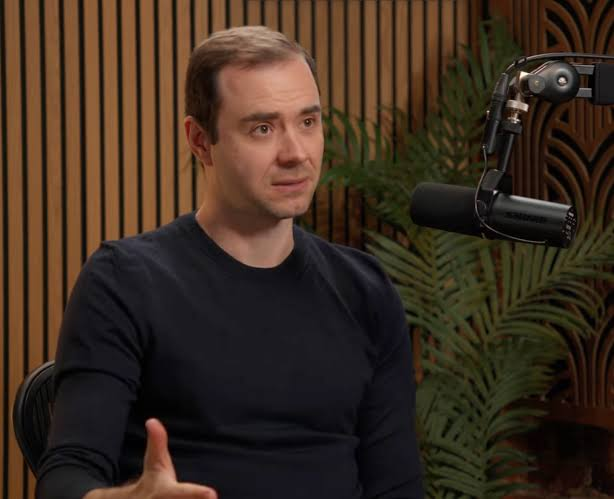

Researcher → creator
Andrej Karpathy
AI research reaches a global audience through long-form lectures, essays, and public conversation.

Act before everyone else catches on.
The accumulation of human attention becomes the literal asset of profiles, brands, and businesses on the internet.
The flow of human attention shapes which ideas spread, which products sell, and which businesses grow.
People already spend on what they pay attention to.

AI research reaches a global audience through long-form lectures, essays, and public conversation.

Technology companies invest in the conversations and creators that shape how people understand their products.

Venture firms build media operations around podcasts, shows, and essays. Distribution is part of their business.

Creators connect emerging ideas with audiences, founders, and investment communities.
Capital flows to where human attention accumulates.
Human attention already dictates capital flows.Recognizing where it moves next should have value too.
We use multi-agent simulations to model how people and AI agents respond to information, influence one another, and decide what deserves their time or resources.
Explore how simulated traders respond to real world information, conviction, and one another.
Explore how attention moves, gathers, and fades across the web.
Watch how 50 simulated agents reacting to real world events on the web.
Gives you a way to act on what you see coming on the internet.
A financial market where people can take positions on who and what will attract attention. Spot emerging momentum. Form a view. And Back it before the outcome is obvious.
Loading Backer Market…
Open Backer MarketAutomatic scrolling pauses while the questions are focused or hovered. Use the arrow keys to read more questions. Press Space to pause or resume.
Will next quarter's orders reflect real demand, or stockpiling ahead of a price increase?
If tariffs add 8% to costs, which customers will accept higher prices and which will switch suppliers?
How much share could a rival's exclusive distribution deal take before our next earnings call?
If supply falls 15%, which allocation choices preserve long-term accounts rather than this quarter's sales?
Will customers commit enough volume to justify a $500 million factory before we break ground?
Our ambition reaches beyond forecasting popularity: help businesses anticipate how people allocate attention and make decisions.
Assess how buyers trade down, delay purchases or switch suppliers as prices rise, and what those responses mean for revenue, margins and market share.
Would passing higher costs through to customers protect margins after accounting for lost sales?
Wherever human attention concentrates, capital follows — and a market forms to price it. Prediction markets just proved that behavior at scale. Backer applies it to what attention actually orbits: people.
Kalshi + Polymarket International · monthly global trading volume
Notional taker volume counts each contract at its $1 face value. Polymarket US is excluded. September is shown at its reported upper bound.
Pew Research Center · May 2026Citi estimated the creator economy generated about $60B in 2022 across ad-funded video, subscriptions, donations, purchases, and sponsorships.
Citi GPS report · 2023Goldman Sachs Research estimated a $250B creator economy in 2023 and projected it could approach $480B by 2027.
Goldman Sachs Research · 2023Approximately 207M people worldwide identify as creators, according to Visa's 2025 report citing Linktree's 2022 creator research.
Visa Creator Report · 2025Backer connects both around the attention economy. We are designing the research and the product together, so each can ask better questions of the other.
What was observable.
What the model predicted.
What people committed to.
What actually happened.
The value grows through measured outcomes and tested improvements in prediction.
Backer AI